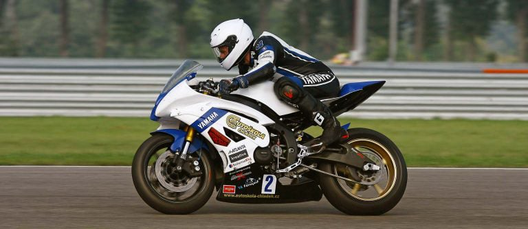
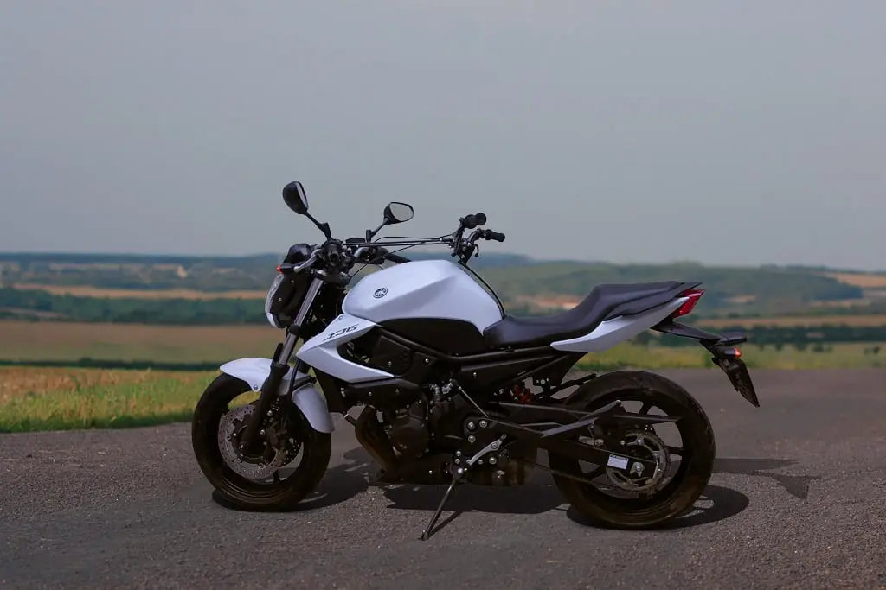
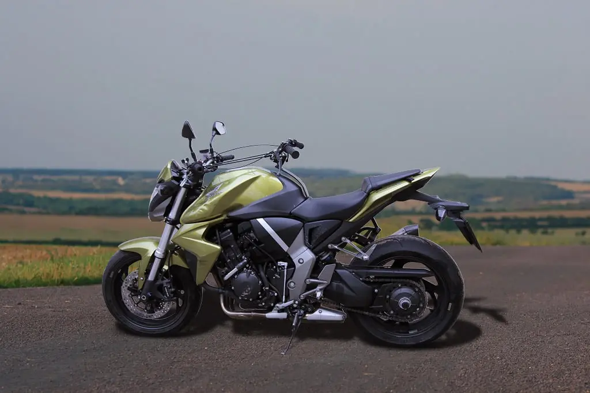
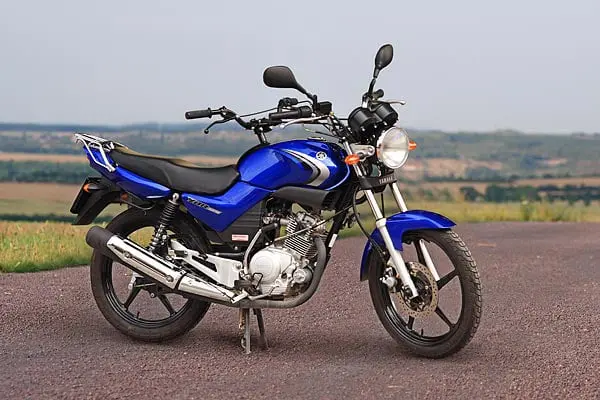

Chcete jen umět řídit motorku, nebo ji chcete opravdu bravurně ovládat? Naučíme vás bezpečně zvládnout motocykly všech kategorií – od skútrů až po silné stroje bez omezení výkonu.
Výcvik probíhá pod vedením zkušených instruktorů a aktivního motocyklového závodníka se zkušenostmi z profesionálních závodů.

Motocykly s výkonem maximálně 35 kW.

Motocykly bez omezení výkonu.
Praktická zkouška pro skupinu A obsahuje jízdu na cvičišti i v běžném provozu. Uchazeč musí zvládnout například slalom, úhybný manévr, krizové brzdění a manipulaci s motocyklem.
Minimální věk
Cena výcviku
Minimální věk
Cena výcviku
Minimální věk
Cena výcviku
Minimální věk
Minimální věk s dvouletou praxí s A2
Cena výcviku
Pohodový skútr pro skupinu AM vhodný i pro úplné začátečníky.
Lehký a snadno ovladatelný motocykl ideální pro skupinu A1.

Lehký a snadno ovladatelný motocykl ideální pro skupinu A1.
Stabilní a rychlý motocykl pro skupinu A2 s výbornou ovladatelností.
Výkonný motocykl pro skupinu A bez omezení výkonu.